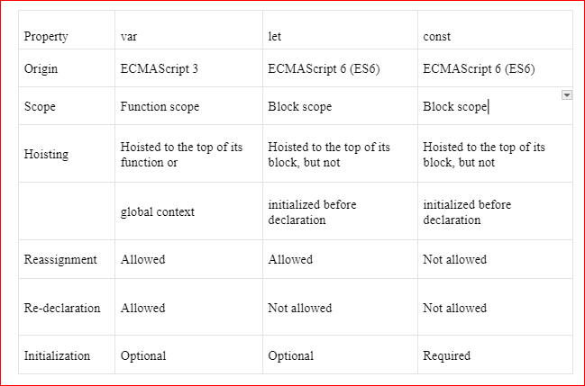

Var, Let, Const
Var, Let, Const ব্যবহার করেই আমরা variable declare করবো।

Variable in JS
JavaScript এ যাই করতে যান না কেনো আপনাকে এই var/variable জানতেই হবে, এই ভ্যারিয়াবল ব্যবহার করেই কোড লিখতে হবে। জাভাস্ক্রিপ্টে ভেরিয়েবল ডিক্লেয়ার করার জন্য, আপনাকে let, const অথবা var কীওয়ার্ড ব্যবহার করতে হবে। এরপর ভেরিয়েবলের নাম লিখতে হবে। যেমনঃ
let myName = "John Doe"; // myName is a variable with the value "John Doe"
const myAge = 30; // myAge is a constant variable with the value 30